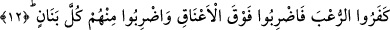

BEDİR GAZVESİNDE GÖRÜLEN
İLÂHÎ LÜTUFLAR
9. Hatırlayın ki, siz Rabb’inizden yardım istiyordunuz. O da: “Ben peşpeşe gelen
bin melek ile size yardım edeceğim.” diyerek duanızı kabul buyurdu.
10. Allah bunu (meleklerle yardımı) sadece müjde olsun ve onunla kalbiniz
yatışsın diye yapmıştı. Zaten yardım yalnız Allah tarafındandır. Çünkü Allah mutlak
galiptir, yegâne hüküm ve hikmet sahibidir.
11. O zaman katından bir güven olmak üzere sizi hafif bir uykuya daldırıyordu;
sizi temizlemek, şeytanın pisliğini (verdiği vesveseyi) sizden gidermek, kalblerinizi
takviye etmek ve ayaklarınızı sabit kılmak için üzerinize gökten bir su (yağmur)
indiriyordu.
12. Hani Rabb’in meleklere: “Muhakkak ben sizinle beraberim; haydi iman
edenlere destek olun. Ben kâfirlerin yüreğine korku salacağım; vurun boyunlarına!
Vurun onların bütün parmaklarına!” diye vahyediyordu.
13. Bu, onların Allah’a ve Rasûlü’ne karşı gelmelerinden ötürüdür. Kim Allah ve
Rasûlü’ne karşı gelirse, bilsin ki Allah azabı şiddetli olandır.
14. İşte siz şimdi onu tadın. Kâfirlere cehennem azabı da vardır.
“Hatırlayın” o vakti “ki, siz Rabb’inizden yardım istiyordunuz.”
“__WORD__”, kurtuluş ve yardım dilemek demektir. Bedir’de savaşın kesin olarak vuku
bulacağını anlayan müminler, Allah Teâlâ’ya yalvarıp: “Ey Rabbimiz, düşmana karşı
bize yardım et. Ey yardım isteyenlerin yardımına koşan, bize yardım et!” diye duâ